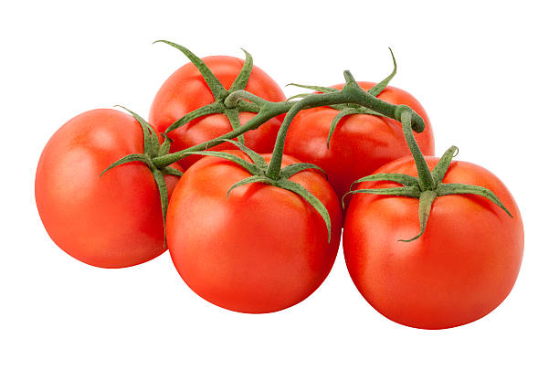

Tomates Rondes en Grappe
3,49€ / Kg
On travaille avec des producteurs locaux qui partagent la même vision : des produits frais, de saison et un circuit court qui respecte le vrai goût et le travail derrière.

Maraîcher bio spécialisé dans les paniers de saison. La ferme privilégie une production raisonnée, sans pesticides, avec une récolte au fil de la maturité pour garder un maximum de fraîcheur.
Les légumes sont vraiment frais et ça se sent au goût.
Bonne qualité, surtout les produits de saison.
On sent que c’est du local, rien à voir avec la grande surface.

Éleveurs engagés pour une viande locale, tracée et respectueuse du bien-être animal. Les bêtes sont élevées en plein air et nourries sans OGM, avec une priorité sur la qualité.
Viande tendre, goût top, on voit que c’est bien élevé.
Très bonne qualité, livraison nickel.
On sent le travail artisanal derrière, super.

Artisans qui transforment des produits bruts en recettes maison : fromages, yaourts, miels et confitures. Leur force c’est le savoir-faire, sans surplus industriel.
Fromages excellents, on sent le côté artisanal.
Le miel est super bon, pas trop sucré.
Produit maison, simple et efficace.